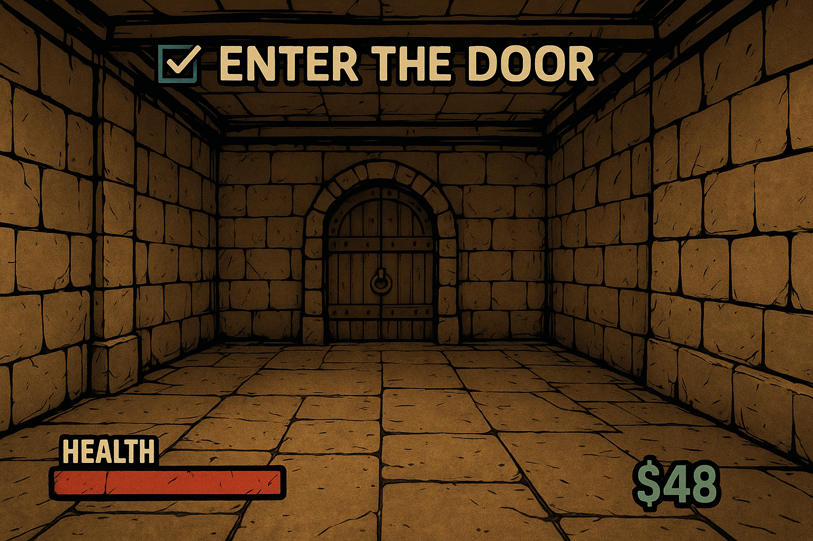
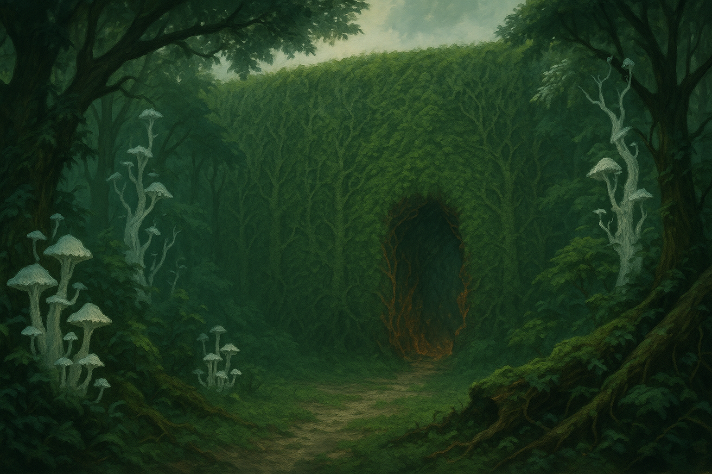
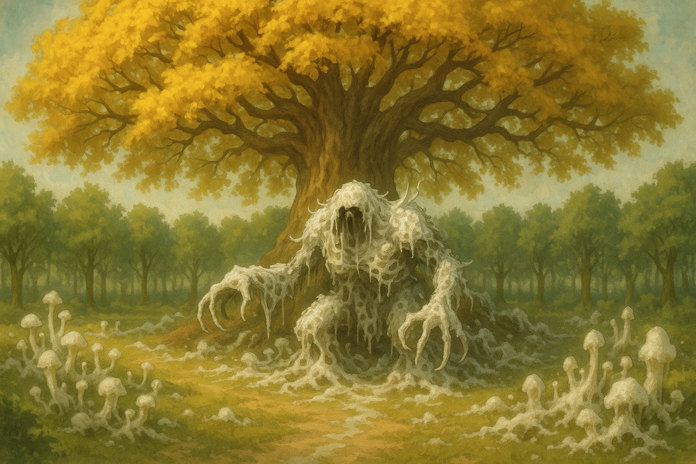
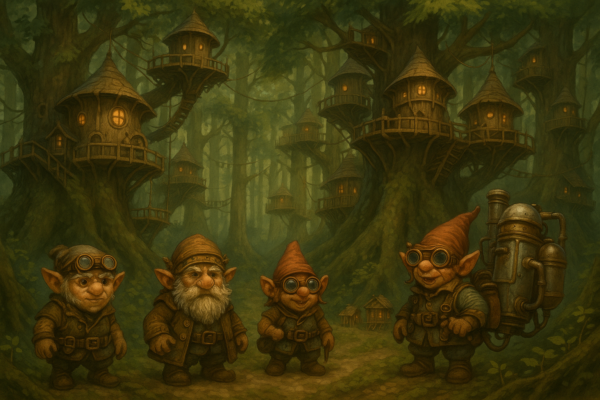
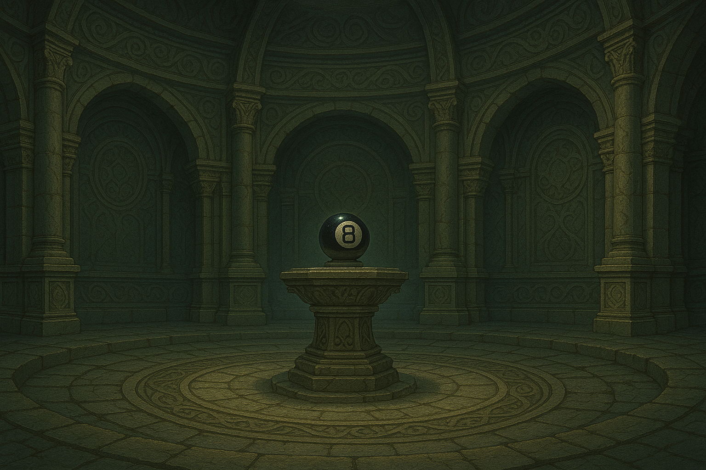
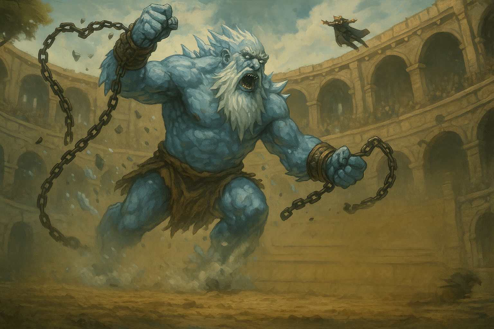

2025 Campaign
2025 Campaign Overview
Multi column
Players
| File4 | Last Modified |
|---|---|
| Fenna | August 11, 2025 |
| Orianna | August 11, 2025 |
| Alice | August 11, 2025 |
| Vladik Shadewrought | August 11, 2025 |
| File10 | Last Modified |
|---|---|
| Gregor | July 31, 2025 |
| Vulkara | July 28, 2025 |
| Ax Tabor | July 08, 2025 |
| Balgor | July 08, 2025 |
| Brad | July 08, 2025 |
| Gnome Mommy | July 08, 2025 |
| Arith | July 08, 2025 |
| Joleene Cybin | July 08, 2025 |
| Soup | July 08, 2025 |
| Katie | July 08, 2025 |
| File10 | Last Modified |
|---|---|
| Cinderwind College | August 11, 2025 |
| ReRe's Cave | August 07, 2025 |
| Truvidale | August 07, 2025 |
| Whispering Grove | July 28, 2025 |
| Seiluna Institute | July 28, 2025 |
| Faculty Offices | July 11, 2025 |
| Cave of Knowledge | July 08, 2025 |
| Esari | July 08, 2025 |
| Grethwyl | July 08, 2025 |
| Jakunta | July 08, 2025 |
| File10 | Image | Arc | Last Modified |
|---|---|---|---|
| Session 10 |  | School Games | August 07, 2025 |
| Session 9 |  | Trouble with Thorn Mothers | July 28, 2025 |
| 00 - Session Notes | - | - | August 12, 2025 |
| Session 8 |  | Trouble with Thorn Mothers | July 28, 2025 |
| Session 6 |  | Trouble with Thorn Mothers | July 31, 2025 |
| Session 7 |  | Trouble with Thorn Mothers | July 28, 2025 |
| Session 5 |  | Cinderwind | August 07, 2025 |
| Session 4 | - | Cinderwind | July 28, 2025 |
| Session 3 | - | Cinderwind | July 28, 2025 |
| Session 2.5 | - | - | March 17, 2025 |
Multi column
Question
Goals
- Gather materials to begin magical experimenting #cinderwind/goal/short
- Study collected samples #cinderwind/goal/short
- Discover which person at campus knows more about magic #cinderwind/goal/mid
- Gather information about Vulkara #cinderwind/goal/long
- Figure out what is going on with magic #cinderwind/goal/long